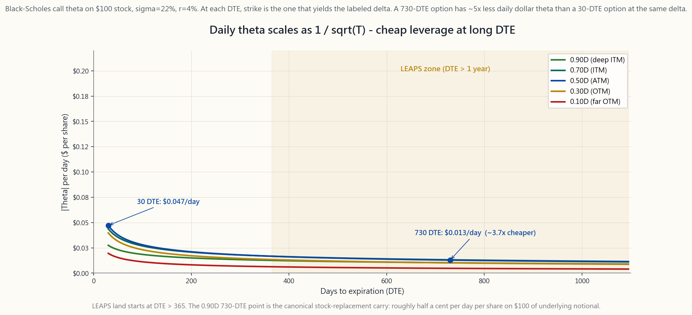
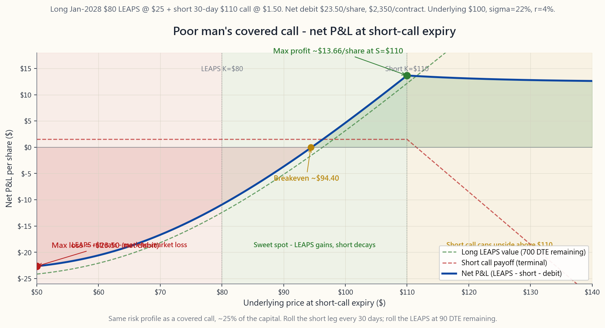

Week 38: LEAPS — Long-Dated Options as Multi-Year Leverage
1. Why This Is Important
A LEAPS — Long-term Equity Anticipation Security — is just a listed call or put with an expiration date more than one year in the future. Two-year and 30-month expirations are the norm on SPY, QQQ, and the top 50 US single names. Mechanically nothing distinguishes a LEAPS from any other option. Pricing comes out of the same Black-Scholes formula, the same Greeks apply, and the same broker handles it. What changes is the time scale, and the time scale changes everything.
The single most important fact about a LEAPS is that its per-day theta is roughly proportional to $1/\sqrt{T}$. A 730-day call has theta-per-day about one-fifth that of a 30-day call at the same delta. That one number — five times less daily decay — is what turns options from a short-term speculation instrument into a multi-year position-sizing tool, and it is what makes LEAPS the natural bridge between weeks 25-30's premium-collection strategies and week 37's deep-ITM stock replacement.
Four reasons this lesson sits where it does in the curriculum.
This lesson covers the math behind why the per-day decay is small, the three canonical LEAPS strategies, and the risks that the 30-DTE option trader has not seen before.
2. What You Need to Know
2.1 What Defines a LEAPS
A LEAPS is, by CBOE convention, a listed equity or ETF option with more than nine months of life left at the moment of measurement. Practically:
- The CBOE issues new January-expiration LEAPS roughly 2.5 years before expiry. In April 2026 you can buy SPY calls expiring January 2027, January 2028, and (for the most liquid names) January 2029.
- A handful of underliers — SPY, QQQ, IWM, and the top single names — also list June-expiration and quarterly LEAPS to round out the calendar.
- Once a LEAPS reaches nine months of life, it converts to a "regular" option for inventory purposes; nothing changes about the contract itself.
2.2 Why Daily Theta Is Small (the $1/\sqrt{T}$ Fact)
The Black-Scholes theta of an at-the-money call on a non-dividend-paying stock simplifies to approximately:
$$ \Theta \approx -\frac{S \sigma}{2\sqrt{T}} \cdot \phi(d_1) - rKe^{-rT}\Phi(d_2) $$
The first term dominates for low rates. The $1/\sqrt{T}$ on $S\sigma$ means daily theta scales as the inverse of the square-root of time-to-expiry. Two consequences:
- A 30-DTE ATM call on a $100 stock with $\sigma = 22\%$ has theta of about -$0.066/day (roughly 0.07% of spot per day).
- A 730-DTE ATM call on the same stock has theta of about -$0.013/day — five times less per day.
![Line chart of absolute daily theta in dollars per share against days-to-expiration (DTE) on a $100 stock with σ=22%, r=4%, with five curves — one for each delta band (10Δ, 30Δ, 50Δ, 70Δ, 90Δ). Every curve has the same 1/√T shape: at 30 DTE the ATM 50Δ line is around $0.066/day; at 365 DTE it falls to ~$0.02/day; at 730 DTE ~$0.013/day, roughly five times less than the 30-DTE point. The 90Δ deep-ITM line is the lowest curve throughout, dropping near half a cent per day at 730 DTE — the math behind why a deep-ITM LEAPS is the cleanest leverage instrument in the public markets.](image/week38_leaps_theta.png)
The same fact extends across deltas. A 0.90Δ deep-ITM LEAPS has daily theta closer to -$0.005/day at 730 DTE — almost negligible. That is the math behind week 37's claim that you can hold a deep-ITM 12-month call for nine months at a cost of 1.5-2.5% of the underlying notional. The fact also explains why LEAPS are wrong for short-term thesis trades: the same $1/\sqrt{T}$ scaling means buying a LEAPS for a 30-day move is overpaying for time you do not need.
2.3 The Three Canonical LEAPS Strategies
Strategy 1: Stock replacement (week 37 anchor). A single deep-ITM (0.85-0.95Δ) LEAPS replicates 85-95% of the underlying's economic exposure for 25-35% of the capital. Held 9-15 months and rolled when 90 days remain. The rest of the position is T-bill yield on the freed cash. This is the canonical L1 application.
Strategy 2: Poor man's covered call (PMCC). Buy a deep-ITM LEAPS. Sell a short-dated (30-45 DTE) out-of-the-money call against it. The sold call captures premium the same way a covered call does against shares (week 27), but the long leg is a $25 LEAPS instead of $100 of stock. Capital outlay falls from $10,000 (for 100 shares) to roughly $2,500 — a 75% reduction. Annualized credit yield is similar to a covered-call program, often 10-18% on the LEAPS premium, which on a per-capital basis is 3-5x what the covered call produces.
![Payoff diagram for a poor man's covered call (PMCC) at the short call's expiration: long one January 2028 $80 LEAPS (≈0.90Δ, paid ~$25/share) plus short one 30-day $110 call (sold for ~$1.50). The x-axis is the underlying stock price 30 days from now; the y-axis is the package P&L. The curve climbs from a -$2,350 floor below the $80 LEAPS strike, peaks at +$950 at the $110 short-call strike (where the short expires worthless and the LEAPS keeps its time value), and is capped flat above $110 (every dollar of further upside is offset by the short going intrinsic). Net debit is ~$23.50/share; max loss is bounded at the debit; max profit hits at exactly the short-call strike. The chart visualises why PMCC is the capital-efficient cousin of week 27's covered call.](image/week38_pmcc_payoff.png)
The PMCC's max profit is reached when the underlying closes exactly at the short call's strike at the short call's expiration; both legs have positive value, the short expires worthless, and the LEAPS retains most of its time value. Max loss is the net debit paid, achieved if the underlying collapses below the LEAPS strike before its expiration. Roll the short call out (further DTE) and up (higher strike) the same way week 27 rolls a covered call.
Strategy 3: Married LEAPS plus put (synthetic stock with floor). Buy a deep-ITM LEAPS for upside; buy a slightly-out-of-the-money put for downside protection. The pair behaves like a long stock position with a defined floor. The premium for the protective put eats into the freed-cash advantage, but for a position the investor is determined to hold through a recession or a known event, the structure caps losses cleanly. Less common than the other two; useful around earnings, FOMC, or geopolitical events.
2.4 Tax Treatment
For a US taxable account holding equity or ETF LEAPS:
- Long LEAPS held > 365 days, sold at gain → long-term capital gain. Same 15-20% federal rate as the stock would have been. State tax follows the federal treatment.
- Long LEAPS held < 365 days, sold at gain → short-term capital gain. Taxed at marginal income rates (up to 37%). This is the trap: a LEAPS bought on April 5, 2026 and sold on April 4, 2027 is short-term; the same trade closed on April 7, 2027 is long-term. The line is sharp.
- Loss treatment. Capital losses, deductible against other capital gains, with up to $3,000/yr against ordinary income and indefinite carryforward.
- PMCC has tax wrinkles. Rolling the short call leg can technically reset the holding period of the LEAPS in some configurations (constructive sale rules under §1259, qualified covered call under §1092). For typical PMCC mechanics — short call strike well above the LEAPS strike, no constructive sale — the LEAPS holding period is preserved. Document carefully if the IRS asks.
- No mark-to-market. Equity options are not Section 1256 contracts; gains crystallise only at sale. SPX index options are 1256 (60/40 LTCG/STCG blend, marked to market at year-end), but LEAPS as commonly used here are equity/ETF options.
2.5 The Risks the 30-DTE Trader Has Not Seen
A 30-day option position is over before the world changes. A 24-month LEAPS sits through every Fed meeting, earnings cycle, and political event between purchase and expiration. The new risks:
[VISUAL: interactive/week38_leaps_lab.html]
2.6 Sizing and Rolling
Three operating rules.
Try the LEAPS Lab interactive — pick a strategy (stock, LEAPS-only, PMCC, married LEAPS+put), drag the sliders, and watch net debit, breakeven, daily theta of the position, and position delta update in real time.
3. Common Misconceptions
4. Q&A Section
Q1. How much cheaper is daily theta on a 2-year LEAPS vs a 30-day option? At the money, roughly five times cheaper per day. The $1/\sqrt{T}$ scaling gives $\sqrt{730/30} \approx 4.9$. Deep-ITM the ratio is bigger because the 30-day deep-ITM call has near-zero extrinsic to begin with.
Q2. What's the right LEAPS strike for stock replacement? 80-85% of spot. That is the band where delta is 0.85-0.95 on a 12-24 month call at typical vols (15-25%) — the band where extrinsic is small relative to dollar exposure controlled.
Q3. What's the right short-call strike on a PMCC? 30-day expiration, 0.20-0.30 delta — 5-10% out of the money. Same rules as week 27's covered call. Avoid strikes below the LEAPS strike (creates a debit calendar) or at the LEAPS strike (no upside left).
Q4. What if my short call gets assigned early? On a non-dividend underlier, early assignment is rare and almost always favorable to you (the assignor gave up time value). On a dividend-paying underlier, the day before ex-dividend the short ITM call may be assigned to capture the dividend; you then are short stock and long the LEAPS, which still has positive synthetic-stock characteristics but requires immediate close-out and re-establishment.
Q5. Can I run a PMCC in an IRA? Yes, at most major brokers (Schwab, Fidelity, IBKR). The short call is "covered" by the long LEAPS for risk purposes. Naked short calls are not allowed; PMCC short calls are.
Q6. How does the freed-cash carry interact with the LEAPS theta? On a 0.92Δ LEAPS, theta is roughly 1.5-2.5% of underlying notional per year. Freed cash earning 4.3% T-bills on 75% of notional yields 3.2% of underlying notional per year. Net carry: +0.7% to +1.7% per year before dividends skipped. The LEAPS is roughly self-financing on indexes.
Q7. How does this interact with the four-tranche framework? LEAPS-replaced equity sleeve consumes 25-30% of the dollar capital that the underlying sleeve target requires. The freed 70-75% can fund the L2 strategies sleeve, the L3 alpha sleeve, or sit in T-bills. This is the operational version of the barbell.
Q8. Should I worry about implied vol when buying LEAPS? Yes — more than for short-dated options. Vega on a 24-month call is ~10x a 30-day call's vega. Don't buy LEAPS when VIX is in its top decile (currently above ~28). At VIX 15-20 in April 2026, LEAPS pricing is reasonable.
Q9. What's the difference between LEAPS on SPY and on SPX? SPX index options are Section 1256 contracts: 60/40 long/short capital gains regardless of holding period, marked to market at year-end. Cash-settled, European-style. SPY options are equity options: standard holding-period rules apply, physical settlement, American-style. SPX LEAPS at 10x notional are tax-cleaner; SPY LEAPS at 1x notional are operationally simpler.
Q10. Will my broker require special permission for LEAPS or PMCCs? LEAPS purchase is Level 1 or 2 options approval — broadly available. The PMCC short leg requires Level 3 (spreads) at most brokers. Naked short calls require Level 4. Check before placing the trade.
Q11. What's the worst that can happen on a PMCC? Underlying collapses below the long LEAPS strike before LEAPS expiration. The LEAPS goes to zero; the short call expired worthless along the way collecting some premium but not enough to offset the LEAPS loss. Max loss is net debit minus all premiums collected over the life of the position.
Q12. When does the LEAPS strategy fail? Three regimes: (1) sustained multi-year drawdown — the LEAPS can go to zero before you can roll; (2) high-vol whipsaw where a high-IV LEAPS purchase is followed by IV crush; (3) anything illiquid where bid-ask round-trips eat the freed-cash carry. Stick to liquid underliers and IV rank below 50.
第三十八週：長期期權 — 作為多年期槓桿工具的長線期權
1. 為何這一課如此重要
長期期權（Long-term Equity Anticipation Security，LEAPS）只是一種到期日超過一年的上市認購或認沽期權。在SPY、QQQ及美國前50大個股上，兩年及30個月的到期期限最為普遍。從機制上看，長期期權與其他期權並無分別。定價同樣來自Black-Scholes公式，希臘值相同，由同一家經紀處理。改變的是時間尺度，而時間尺度改變一切。
關於長期期權，最重要的一個事實是：其每日時間值損耗（theta）大致與$1/\sqrt{T}$成正比。在相同的delta下，730天的認購期權每日theta約為30天認購期權的五分之一。正是這個數字——每日損耗少五倍——使期權從短線投機工具變成多年期的持倉規模管理工具，也使長期期權成為第25至30週的期權金收取策略與第37週的深度價內股票替代策略之間的天然橋樑。
以下四個原因說明這一課為何編排在課程的這個位置。
本課涵蓋每日損耗較低背後的數學原理、三種典型長期期權策略，以及30天到期日期權交易者此前未曾見過的風險。
2. 你需要掌握的內容
2.1 長期期權的定義
按芝加哥期權交易所（CBOE）的慣例，長期期權是指在衡量時剩餘有效期超過九個月的上市股票或交易所買賣基金期權。實際操作上：
- CBOE會在到期前約2.5年發行新的一月份到期長期期權。在2026年4月，你可以購買2027年1月、2028年1月，以及（對最具流動性的標的而言）2029年1月到期的SPY認購期權。
- 少數標的——SPY、QQQ、IWM及主要個股——亦會列出六月份及季度長期期權，以完善日曆安排。
- 一旦長期期權剩餘有效期降至九個月，它在庫存分類上便轉換為「普通」期權；合約本身不會有任何改變。
2.2 為何每日時間值損耗較低（$1/\sqrt{T}$原理）
對於不派息股票的平價認購期權，Black-Scholes的theta可近似簡化為：
$$ \Theta \approx -\frac{S \sigma}{2\sqrt{T}} \cdot \phi(d_1) - rKe^{-rT}\Phi(d_2) $$
在低利率環境下，第一項佔主導地位。$S\sigma$前的$1/\sqrt{T}$意味著每日theta與到期時間的平方根成反比。由此帶來兩個結果：
- 一隻$100的股票，引伸波幅$\sigma = 22\%$，30天到期的平價認購期權每日theta約為-$0.066（大約每日損耗現貨價值的0.07%）。
- 同一股票730天到期的平價認購期權每日theta約為-$0.013——每日損耗少五倍。

同樣的規律在不同delta上均成立。在730天到期時，0.90Δ的深度價內長期期權每日theta接近-$0.005——幾乎可以忽略不計。這正是第37週所稱可以持有深度價內12個月認購期權長達九個月、而持倉成本僅為相關正股名義價值1.5至2.5%的數學根據。這一規律同時解釋了為何長期期權不適合短期觀點的交易：相同的$1/\sqrt{T}$比例關係意味著，若為30天走勢而購買長期期權，等於為你並不需要的時間支付溢價。
2.3 三種典型長期期權策略
策略一：股票替代（第37週的核心）。 一份深度價內（0.85至0.95Δ）長期期權，以25至35%的資金複製相關資產85至95%的經濟敞口。持倉9至15個月，於剩餘90天時展期。剩餘現金存放於短期國債，賺取利息。這是最典型的第一層應用。
策略二：窮人版備兌認購期權（PMCC）。 買入深度價內長期期權，同時沽出短線（30至45天到期）價外認購期權。沽出的認購期權以與第27週相同的方式收取期權金——就像以股份進行備兌認購一樣——但多頭部分是$25的長期期權而非$100的股票。所需資金由$10,000（100股）降至約$2,500——減少75%。年化期權金收益率與備兌認購計劃相似，通常為長期期權期權金的10至18%；若以每單位資本計算，則是備兌認購的3至5倍。

PMCC的最大利潤在空倉認購期權到期時正股收於短倉行使價時實現；兩個部分均有正值，空倉到期作廢，長期期權保留大部分時間值。最大虧損為支付的淨支出，發生於正股在長期期權到期前大幅下跌至長期期權行使價以下。展期空頭認購期權的方式（延長到期日並上調行使價）與第27週展期備兌認購期權相同。
策略三：長期期權加認沽期權組合（合成股票附設底部保護）。 買入深度價內長期期權以獲取上行敞口；同時買入略為價外的認沽期權作下行保護。兩者合計的表現類似持有正股並設有明確底部的長倉。保護性認沽期權的期權金會蠶食釋放現金的優勢，但對於投資者決心持倉度過經濟衰退或特定事件的情況，此結構能清晰限制損失。此策略較前兩者少見；適用於業績公告、美聯儲議息或地緣政治事件前後。
2.4 稅務處理
對於持有股票或交易所買賣基金長期期權的美國應稅賬戶：
- 持倉逾365天的長期期權多倉，獲利出售→長期資本增值。 與股票相同的聯邦15至20%稅率。州稅亦跟隨聯邦待遇。
- 持倉不足365天的長期期權多倉，獲利出售→短期資本增值。 按邊際所得稅率課稅（最高37%）。這是陷阱所在：一份於2026年4月5日買入、並於2027年4月4日出售的長期期權屬短期；同一交易若於2027年4月7日平倉則屬長期。界線非常分明。
- 虧損處理。 資本虧損可抵扣其他資本增值，每年最多$3,000可抵扣普通收入，餘額可無限期結轉。
- PMCC有稅務細節需注意。 展期空頭認購期權腿在某些情況下可能在技術上重置長期期權的持有期（《國內稅收法》第1259條的推定出售規則，及第1092條的合資格備兌認購）。對於典型的PMCC操作——空頭行使價遠高於長期期權行使價，無推定出售——長期期權的持有期得以保留。若國稅局查詢，請保存完整記錄。
- 無按市值計算課稅。 股票期權不屬第1256條合約；利潤僅在出售時才結算。SPX指數期權屬第1256條（60/40長期/短期資本增值混合，年終按市值計算），但本課所述的長期期權均為股票及交易所買賣基金期權。
2.5 30天到期日交易者此前未見的風險
一個30天期權倉位結束前，世界不會有太大變化。一份24個月的長期期權，卻要經歷持倉至到期日之間的每一次美聯儲議息、業績公告周期及政治事件。以下是新的風險：
[VISUAL: interactive/week38_leaps_lab.html]
2.6 倉位規模與展期
三條操作原則：
試用長期期權實驗室互動工具——選擇策略（正股、純長期期權、PMCC、長期期權加保護性認沽期權），拖動滑桿，實時觀察淨支出、盈虧平衡點、整體倉位每日theta及倉位delta的變化。
3. 常見誤解
4. 問答環節
問題一：24個月長期期權與30天期權相比，每日theta便宜多少？ 以平價計算，大約便宜五倍。$1/\sqrt{T}$的比例關係給出$\sqrt{730/30} \approx 4.9$。深度價內時比例更大，因為30天深度價內認購期權本身幾乎沒有外在價值。
問題二：股票替代應選用哪個行使價的長期期權？ 現貨價的80至85%。在典型波幅（15至25%）下，12至24個月認購期權的delta範圍為0.85至0.95——在這個區間，外在價值相對於控制的美元敞口較低。
問題三：PMCC的空頭認購期權應選哪個行使價？ 30天到期，0.20至0.30 delta——價外5至10%。規則與第27週的備兌認購期權相同。避免選取低於長期期權行使價的行使價（會形成需支付淨支出的日曆價差），或等於長期期權行使價的行使價（沒有上行空間）。
問題四：如果空頭認購期權被提前行使怎麼辦？ 在不派息的標的上，提前行使甚少發生，且幾乎總是對你（沽出方）有利（行使方放棄了時間值）。在派息標的上，在除息日前一天，價內的空頭認購期權可能被行使以套取股息；你隨後持有空頭股票及多頭長期期權，仍具有正合成股票特性，但需立即平倉並重新建立倉位。
問題五：可以在個人退休賬戶中運行PMCC嗎？ 可以，大多數主要經紀（嘉信理財、富達、盈透）均允許。空頭認購期權在風險管理層面被長期期權所涵蓋。裸倉空頭認購期權不被允許；PMCC的空頭認購期權則可以。
問題六：釋放的現金收益如何與長期期權的時間值損耗互動？ 以0.92Δ長期期權計算，theta約為正股名義價值的每年1.5至2.5%。釋放的現金以4.3%短期國債收益率賺取，相當於正股名義價值的每年3.2%（75%名義價值×4.3%）。淨持倉成本：每年+0.7%至+1.7%（未計入放棄的股息）。對於指數而言，長期期權的持倉成本大致可自我抵消。
問題七：這如何與四層架構互動？ 以長期期權替代的股票板塊，僅消耗相應板塊目標美元資本的25至30%。釋放的70至75%可用於資助第二層策略板塊、第三層超額回報板塊，或存放在短期國債中。這是槓鈴策略的實際操作版本。
問題八：買入長期期權時是否需要擔心引伸波幅？ 是的——比短線期權更需要擔心。24個月認購期權的vega約為30天認購期權的10倍。在波動率指數處於最高十分位時（目前約在28以上），不要買入長期期權。在2026年4月波動率指數為15至20時，長期期權定價屬合理水平。
問題九：SPY上的長期期權與SPX上的有何分別？ SPX指數期權屬第1256條合約：無論持有期長短，資本增值均按60/40長期/短期計算，年終按市值計算。以現金結算，歐式行使。SPY期權屬股票期權：適用標準持有期規則，實物結算，美式行使。以10倍名義價值計算的SPX長期期權稅務上較乾淨；以1倍名義價值計算的SPY長期期權操作上較為簡便。
問題十：經紀是否需要特別許可才能交易長期期權或PMCC？ 購買長期期權屬第一或第二級期權許可——普遍適用。PMCC的空頭腿在大多數經紀需要第三級許可（價差）。裸倉空頭認購期權需要第四級許可。交易前請先確認。
問題十一：PMCC最壞的情況是什麼？ 正股在長期期權到期前跌至長期期權行使價以下。長期期權歸零；沿途的空頭認購期權到期作廢，收取了一些期權金，但不足以抵消長期期權的虧損。最大虧損為淨支出減去持倉期間收取的所有期權金。
問題十二：長期期權策略在什麼情況下失效？ 三種情境：（一）持續多年的下跌市——長期期權可能在你有機會展期前歸零；（二）高波幅的劇烈震盪——在高引伸波幅時買入長期期權，隨後遭遇波幅收縮；（三）任何流動性不足的標的——買賣差價的往返成本侵蝕釋放現金的收益。堅守具流動性的標的，並確保引伸波幅排名低於50。
第三十八週：長期期權——多年期槓桿工具
1. 為什麼這個主題很重要
長期期權（LEAPS）——長期股票預期證券——本質上就是到期日超過一年的上市買權或賣權。以SPY、QQQ及美股前50大個股而言，二年期與30個月期的到期日最為常見。就機制而言，長期期權與其他選擇權並無任何差異。定價同樣來自Black-Scholes公式，同樣適用相同的希臘字母，也由同一家券商處理。改變的是時間尺度，而時間尺度改變了一切。
關於長期期權，最重要的一個事實是：每日時間價值衰減（theta）大致與$1/\sqrt{T}$成正比。在相同的Delta下，730天的買權每日theta大約僅為30天買權的五分之一。正是這個數字——每日衰減僅五分之一——使選擇權從短線投機工具轉型為多年期的部位管理工具，也使長期期權成為第25至30週溢價收取策略與第37週深度價內股票替代策略之間天然的橋樑。
本課程排在此處，有以下四個原因。
本課程涵蓋每日衰減之所以偏低的數學原理、三種經典長期期權策略，以及30天到期日選擇權交易者所未曾見過的風險。
2. 你需要了解的內容
2.1 長期期權的定義
按照芝加哥期權交易所（CBOE）的慣例，長期期權是指在衡量當下剩餘存續期間超過九個月的上市股票或指數股票型基金選擇權。實際上：
- CBOE通常在到期前約2.5年新發行一月份到期的長期期權。在2026年4月，你可以買到2027年1月、2028年1月，以及（針對最具流動性的標的）2029年1月到期的SPY買權。
- 少數標的——SPY、QQQ、IWM及頂級個股——另有6月份到期及季度長期期權，以補充完整的到期日曆。
- 一旦長期期權剩餘存續期間縮短至九個月，在庫存管理上即轉為「一般」選擇權；合約本身並無任何改變。
2.2 為何每日Theta偏低（$1/\sqrt{T}$的事實）
無配息股票的價平買權在Black-Scholes模型下，Theta可簡化為：
$$ \Theta \approx -\frac{S \sigma}{2\sqrt{T}} \cdot \phi(d_1) - rKe^{-rT}\Phi(d_2) $$
在低利率環境下，第一項為主導項。$S\sigma$中的$1/\sqrt{T}$意味著每日theta按照到期時間平方根的倒數進行縮放。由此產生兩個結果：
- 一檔股價100美元、$\sigma = 22\%$的股票，30天到期的價平買權每日theta約為-$0.066（約占股價的0.07%）。
- 同一檔股票730天到期的價平買權每日theta約為-$0.013——每日衰減僅為前者的五分之一。
這個事實同樣適用於不同Delta。0.90Δ深度價內長期期權在730 DTE時，每日theta接近-$0.005——幾乎可以忽略不計。這就是第37週所說的數學依據：持有一個深度價內12個月買權達九個月，成本約為標的名義金額的1.5-2.5%。這個事實同時解釋了為何長期期權不適合短線主題交易：相同的$1/\sqrt{T}$縮放意味著，為30天的行情走勢買入長期期權，是在為你根本不需要的時間溢價支付過高費用。
2.3 三種經典長期期權策略
策略一：股票替代（第37週核心）。 單一深度價內（0.85-0.95Δ）長期期權，以25-35%的資金複製標的85-95%的經濟曝險。持有9-15個月，當剩餘90天時進行展期。釋放出的資金存放於國庫券賺取殖利率。這是L1級別的標準應用。
策略二：窮人版掩護性買權（PMCC）。 買入深度價內長期期權，同時賣出短期（30-45天到期）價外買權。所賣出的買權以第27週對持股賣出買權的相同方式收取權利金，但多頭腳為25美元的長期期權，而非100美元的股票。資金需求從10,000美元（100股）降至約2,500美元——減少75%。年化信用殖利率與掩護性買權策略相近，對長期期權權利金的報酬率通常達10-18%，換算成資本報酬率，約為掩護性買權的3-5倍。
PMCC的最大獲利在標的股價於短期買權到期日恰好收在短期買權履約價時實現；兩腳均具有正值，空頭腳到期失效，長期期權保有大部分時間價值。最大虧損為淨支出的權利金，在標的大幅跌破長期期權履約價時發生。展期空頭買權的方式（向更遠到期日延伸並提高履約價）與第27週展期掩護性買權相同。
策略三：長期期權搭配保護性賣權（合成股票加底部保護）。 買入深度價內長期期權獲取上行空間；同時買入輕微價外賣權提供下行保護。這一組合的行為類似帶有明確底部保護的持股多頭。保護性賣權的權利金成本會侵蝕釋放資金的優勢，但對於投資人決定持有穿越景氣衰退或特定事件的部位而言，該結構能乾淨地設定虧損上限。此策略比其他兩種較不普遍，適合在財報、聯準會會議或地緣政治事件前後使用。
2.4 稅務處理
對於持有股票或指數股票型基金長期期權的美國應稅帳戶：
- 持有超過365天的長期期權多頭，獲利出售→長期資本利得。 聯邦稅率15-20%，與持有股票相同。州稅遵循聯邦處理原則。
- 持有不足365天的長期期權多頭，獲利出售→短期資本利得。 按邊際所得稅率課稅（最高37%）。這是陷阱所在：2026年4月5日買入的長期期權，若於2027年4月4日出售，屬短期；同一筆交易若於2027年4月7日結清，則屬長期。這條線非常明確。
- 虧損處理。 資本損失可抵扣其他資本利得，每年最多可抵扣3,000美元的一般所得，且可無限期遞延。
- PMCC有稅務細節需注意。 展期空頭買權腳在某些情況下，可能依技術上的認定重置長期期權的持有期間（依《稅法》第1259條推定銷售規則及第1092條合格掩護性買權規定）。就典型PMCC架構而言——空頭買權履約價遠高於長期期權履約價，不構成推定銷售——長期期權的持有期間得以保全。若國稅局（IRS）查詢，請留存完整紀錄。
- 不採逐日盯市制度。 股票選擇權不屬於第1256條合約；利得僅在出售時實現。SPX指數選擇權屬第1256條（60/40長短期資本利得混合，年底逐日盯市），但此處所討論的長期期權為股票/指數股票型基金選擇權，不適用此規定。
2.5 30天到期日交易者所未見過的風險
一個30天的選擇權部位，在世界改變之前就已結束。一個24個月的長期期權，則需歷經買入到到期之間的每一次聯準會會議、每一個財報季與每一個政治事件。這些新增的風險包括：
[VISUAL: interactive/week38_leaps_lab.html]
2.6 部位規模與展期
三條操作原則。
歡迎使用長期期權實驗室互動工具——選擇策略（股票、僅持長期期權、PMCC、長期期權搭配保護性賣權），拖動滑桿，即時觀察淨支出、損益平衡點、每日theta及部位Delta的變化。
3. 常見迷思
4. 問與答
Q1. 2年期長期期權的每日Theta比30天選擇權便宜多少？ 對於價平選擇權，每日衰減約便宜五倍。$1/\sqrt{T}$縮放給出$\sqrt{730/30} \approx 4.9$。深度價內的比例更大，因為30天到期的深度價內買權本身幾乎沒有時間價值可言。
Q2. 股票替代策略應選擇哪個長期期權履約價？ 股價的80-85%。在典型波動率（15-25%）下，12-24個月期買權對應的Delta為0.85-0.95——這個區間的時間價值相對於所控制的美元曝險而言較小。
Q3. PMCC應選擇哪個空頭買權履約價？ 30天到期，0.20-0.30 Delta——價外5-10%。規則與第27週掩護性買權相同。避免選擇低於長期期權履約價的履約價（會形成需支付淨支出的日曆價差），或與長期期權同一履約價（剩餘上行空間為零）。
Q4. 空頭買權若遭提前履約，應如何處理？ 對於無股利標的，提前履約罕見，且幾乎總對你（被指派方）有利（指派人放棄了時間價值）。對於有配息標的，在除息日前一天，價內空頭買權可能遭履約以捕捉股利；此時你將持有空頭股票部位與多頭長期期權，仍具備合成多頭股票的正面特性，但需立即平倉並重新建立部位。
Q5. 可以在個人退休帳戶（IRA）中操作PMCC嗎？ 可以，大多數主要券商均支援（Schwab、Fidelity、IBKR）。空頭買權在風險管理上視為受長期期權掩護。裸賣空買權不被允許；PMCC的空頭買權則被允許。
Q6. 釋放資金的持有收益與長期期權的Theta如何互相影響？ 0.92Δ長期期權的Theta，約為標的名義金額的1.5-2.5%/年。75%名義金額的釋放資金以4.3%國庫券投資，產生約3.2%名義金額/年的收益。淨持有成本：每年+0.7%至+1.7%（稅前，未計放棄的股利）。就指數而言，長期期權大致可自我持平。
Q7. 這如何與四檔框架互動？ 長期期權替代後的股票配置，所需的美元資本僅為標的配置目標的25-30%。釋放出的70-75%可用於L2策略配置、L3阿爾法配置，或停泊於國庫券。這是槓鈴策略的操作版本。
Q8. 買入長期期權時，是否需要關注隱含波動率？ 是的——比短期選擇權更需要關注。24個月買權的Vega約為30天買權的10倍。波動率指數（VIX）處於最高十分位時（目前約高於28），請勿買入長期期權。以2026年4月VIX在15-20的環境而言，長期期權定價合理。
Q9. SPY與SPX的長期期權有何差異？ SPX指數選擇權屬於第1256條合約：無論持有期間，一律適用60/40長短期資本利得，並於年底逐日盯市。以現金結算，歐式選擇權。SPY選擇權為股票選擇權：適用標準持有期間規定，實物交割，美式選擇權。SPX長期期權名義金額為10倍，稅務處理更簡潔；SPY長期期權名義金額為1倍，操作上更為簡便。
Q10. 券商是否要求特別申請才能操作長期期權或PMCC？ 買入長期期權需要一級或二級選擇權資格——適用範圍廣泛。PMCC的空頭腳在大多數券商需要三級（價差策略）資格。裸賣空買權需要四級資格。下單前請先確認。
Q11. PMCC最壞的情況是什麼？ 標的在長期期權到期前大幅跌破多頭長期期權履約價。長期期權歸零；空頭買權在過程中陸續到期收取了部分權利金，但不足以彌補長期期權的損失。最大虧損為淨支出減去持倉期間所有收取的權利金。
Q12. 長期期權策略在哪些情況下會失敗？ 三種情境：（1）持續多年的回撤——長期期權可能在來得及展期之前便已歸零；（2）高波動率劇烈震盪——在高隱含波動率時買入長期期權，隨後遭遇波動率壓縮；（3）任何流動性不足的標的——買賣價差的往返成本侵蝕了釋放資金的持有收益。請堅守流動性良好的標的，且隱含波動率排名低於50。
第三十八周：长期期权——作为多年期杠杆工具的长期期权
1. 为何重要
长期期权（LEAPS）本质上就是到期日超过一年的上市看涨或看跌期权。在SPY、QQQ及美股前50大单只股票上，两年期和30个月期是最常见的期限。从机制上讲，长期期权与任何普通期权并无区别。定价同样来自Black-Scholes公式，同样适用Greeks，同样由同一家券商处理。改变的是时间维度，而时间维度的改变足以改变一切。
长期期权最核心的事实是：其每日Theta大致与$1/\sqrt{T}$成正比。在相同Delta下，730天的看涨期权每日Theta约为30天看涨期权的五分之一。正是这一数字——每日衰减仅为五分之一——使期权从短期投机工具转变为多年期头寸管理工具，也使长期期权成为第25-30周权利金收取策略与第37周深度实值股票替代策略之间天然的桥梁。
本课在课程体系中处于当前位置，有以下四点原因。
本课将介绍每日衰减量较小背后的数学原理、三种典型长期期权策略，以及30天到期期权交易者此前未曾遭遇的风险。
2. 必备知识
2.1 长期期权的定义
按照CBOE惯例，长期期权是指在测量时点剩余期限超过九个月的上市股票或ETF期权。实际操作上：
- CBOE通常在到期前约2.5年发行新的1月到期长期期权。2026年4月，你可以买入2027年1月、2028年1月，以及（对于流动性最强的标的）2029年1月到期的SPY看涨期权。
- 少数标的——SPY、QQQ、IWM及头部单只股票——还会增设6月到期和季度长期期权，以丰富期限选择。
- 一旦长期期权剩余期限降至九个月以内，它在库存分类上就转变为"普通"期权；合约本身不会有任何变化。
2.2 为何每日Theta较小（$1/\sqrt{T}$的事实）
对于不分红股票上的平值看涨期权，Black-Scholes公式中的Theta可近似简化为：
$$ \Theta \approx -\frac{S \sigma}{2\sqrt{T}} \cdot \phi(d_1) - rKe^{-rT}\Phi(d_2) $$
在低利率环境下，第一项占主导。$S\sigma$中的$1/\sqrt{T}$意味着每日Theta与到期时间平方根成反比。由此产生两个结论：
- 一只$100股票（$\sigma = 22\%$）30天到期的平值看涨期权，每日Theta约为-$0.066（约为标的价格的0.07%/天）。
- 同一股票730天到期的平值看涨期权，每日Theta约为-$0.013——每日衰减量仅为前者的五分之一。
同样的事实在各Delta区间均成立。0.90Δ深度实值长期期权在730 DTE时每日Theta接近-$0.005——几乎可忽略不计。这正是第37周所言"持有深度实值12个月期权9个月的年化成本仅为标的名义价值1.5-2.5%"的数学依据。同样的$1/\sqrt{T}$缩放关系也解释了为何长期期权不适合短期论点交易：若仅用于捕捉30天内的行情，买入长期期权意味着为不需要的时间溢价多付出代价。
2.3 三种典型长期期权策略
策略一：股票替代（第37周的核心锚点）。 一份单一的深度实值（0.85-0.95Δ）长期期权，可以25-35%的资金复制标的物85-95%的经济敞口。持有9-15个月，剩余90天时展期。释放的闲置资金则以国债收益率运作。这是L1策略的标准应用形式。
策略二：穷人版备兑看涨期权（PMCC）。 买入深度实值长期期权，同时卖出短期（30-45天到期）的虚值看涨期权进行备兑。与第27周中持有股票备兑卖出看涨期权的方式完全相同，但多头端是一份$25的长期期权，而非$100的股票。资金占用从$10,000（100股）降至约$2,500——减少75%。年化权利金收益率与备兑看涨期权策略相近，通常为长期期权权利金的10-18%，折合到资金占用上，是传统备兑看涨期权收益率的3-5倍。
PMCC的最大利润在标的价格恰好在短期看涨期权到期时收于其行权价处实现：两条腿均为正值，空头到期为零，长期期权保留大部分时间价值。最大亏损为净支出，即在标的于长期期权到期前大幅下跌至其行权价以下时实现。展期操作（期限更长、行权价更高）与第27周的备兑看涨期权展期方式相同。
策略三：长期期权配合看跌期权（合成股票加保护底线）。 买入深度实值长期期权获取上行敞口；同时买入轻度虚值看跌期权对下行风险进行保护。该组合的行为类似于具有明确下行底线的正股多头头寸。保护性看跌期权的权利金成本会侵蚀闲置资金的收益优势，但对于投资者决意持仓穿越衰退或已知事件的情形，该结构能清晰地限制亏损。这种策略不如前两种常见；在盈利公告、美联储议息会议或地缘政治事件前后尤为适用。
2.4 税务处理
对于持有股票或ETF长期期权的美国应税账户：
- 持有超过365天的多头长期期权，盈利卖出 → 长期资本利得。 联邦税率与持有正股相同，均为15-20%。各州税务规定与联邦保持一致。
- 持有不足365天的多头长期期权，盈利卖出 → 短期资本利得。 按普通收入边际税率征税（最高37%）。这是陷阱所在：2026年4月5日买入的长期期权，若于2027年4月4日卖出则为短期；同样的交易若于2027年4月7日平仓则为长期。这条线非常清晰，不容忽视。
- 亏损处理。 资本亏损可抵扣其他资本利得，每年最多可抵扣$3,000的普通收入，且可无限期向后结转。
- PMCC的税务细节。 展期空头看涨期权腿在某些情形下可能从技术上重置长期期权的持有期（根据§1259的推定出售规则及§1092的合格备兑看涨期权规定）。对于典型的PMCC操作——空头看涨行权价明显高于长期期权行权价，不构成推定出售——长期期权的持有期不受影响。一旦国税局查询，应有完整记录留存。
- 无按市值计价规则。 股票期权不属于1256条款合约；损益仅在卖出时确认。SPX指数期权属于1256合约（60/40的长期/短期资本利得混合，年末按市值计价），但本文中常用的股票/ETF期权的长期期权并不适用此规定。
2.5 30天期权交易者未曾遭遇的风险
一个30天期权头寸在世界发生任何变化之前就已了结。一份24个月期限的长期期权则需经历其存续期内的每一次美联储会议、每一个盈利周期，以及每一个政治事件。新的风险主要有以下几类：
[VISUAL: interactive/week38_leaps_lab.html]
2.6 头寸规模与展期
三条操作规则。
请尝试长期期权实验室互动工具——选择策略（正股、纯长期期权、PMCC、长期期权配看跌期权），拖动滑块，实时观察净支出、盈亏平衡点、头寸每日Theta和头寸Delta的变化。
3. 常见误解
4. 问答环节
Q1. 2年期长期期权与30天期权相比，每日Theta便宜多少？ 对于平值期权，每日衰减约便宜五倍。$1/\sqrt{T}$缩放关系给出$\sqrt{730/30} \approx 4.9$。对于深度实值期权，这一比值更大，因为30天到期的深度实值看涨期权本身外在价值几乎为零。
Q2. 股票替代策略中，长期期权应选择哪个行权价？ 标的价格的80-85%。在典型波动率（15-25%）下，12-24个月期限的看涨期权Delta区间为0.85-0.95——在这个区间内，外在价值相对于所控制的美元敞口较小。
Q3. PMCC中的空头看涨期权应选择哪个行权价？ 30天到期，0.20-0.30 Delta——虚值5-10%。与第27周备兑看涨期权的规则相同。避免行权价低于长期期权行权价（会形成需支付净支出的日历价差）或等于长期期权行权价（不留上行空间）。
Q4. 如果空头看涨期权被提前行权该怎么办？ 对于不分红标的，提前行权极为罕见，且几乎总是对你有利（被行权者放弃了时间价值）。对于分红标的，空头实值看涨期权可能在除息日前一天被行权以捕获股息；此时你持有空头股票和多头长期期权，仍具有正的合成股票特性，但需要立即平仓并重新建仓。
Q5. 可以在IRA账户中运行PMCC吗？ 可以，在大多数主要券商（嘉信理财、富达、盈透证券）均可操作。空头看涨期权在风险管理上被多头长期期权所覆盖。裸空头看涨期权不允许；PMCC中的空头看涨期权则可以。
Q6. 闲置资金的利息收益如何与长期期权Theta相互作用？ 对于0.92Δ长期期权，Theta约为标的名义价值的1.5-2.5%/年。闲置的75%名义价值资金持有收益率4.3%国债，每年带来标的名义价值约3.2%的收益。净持有成本：除已放弃股息外，每年约为+0.7%至+1.7%。长期期权在指数标的上大致可实现自我融资。
Q7. 这与四仓位框架如何对应？ 经长期期权替代的股票仓位，仅消耗该仓位目标所需资金的25-30%。释放的70-75%资金可用于配置L2策略仓位、L3超额收益仓位，或持有国债。这是杠铃策略的具体操作形式。
Q8. 买入长期期权时是否需要关注隐含波动率？ 是的——比短期期权更需要关注。24个月期看涨期权的Vega约为30天看涨期权的10倍。不要在波动率指数处于最高十分位时买入长期期权（当前阈值约为28以上）。2026年4月波动率指数在15-20区间，长期期权定价较为合理。
Q9. SPY上的长期期权与SPX上的有何区别？ SPX指数期权属于1256条款合约：无论持有期长短，均适用60/40的长期/短期资本利得混合税率，且年末按市值计价。现金结算，欧式期权。SPY期权属于股票期权：适用标准持有期规则，实物结算，美式期权。名义价值为10倍的SPX长期期权税务更简洁；名义价值为1倍的SPY长期期权操作更简便。
Q10. 券商是否需要特别审批才能操作长期期权或PMCC？ 买入长期期权需要一级或二级期权权限——门槛较低，广泛可及。PMCC空头腿在大多数券商需要三级权限（价差策略）。裸空头看涨期权需要四级权限。下单前请确认。
Q11. PMCC最糟糕的情形是什么？ 标的在长期期权到期前跌破多头长期期权行权价。长期期权归零；空头看涨期权沿途到期虚值，收取了一些权利金，但不足以弥补长期期权亏损。最大亏损为净支出减去整个持仓期间收取的全部权利金。
Q12. 长期期权策略在什么情况下会失效？ 三种情形：（1）持续多年的大幅回撤——长期期权在你来得及展期前可能归零；（2）高波动率大幅震荡——高隐含波动率下买入长期期权后遭遇波动率崩塌；（3）任何流动性不足的标的——买卖价差的往返成本侵蚀掉闲置资金的利息收益。坚守流动性充足的标的，且隐含波动率百分位低于50。